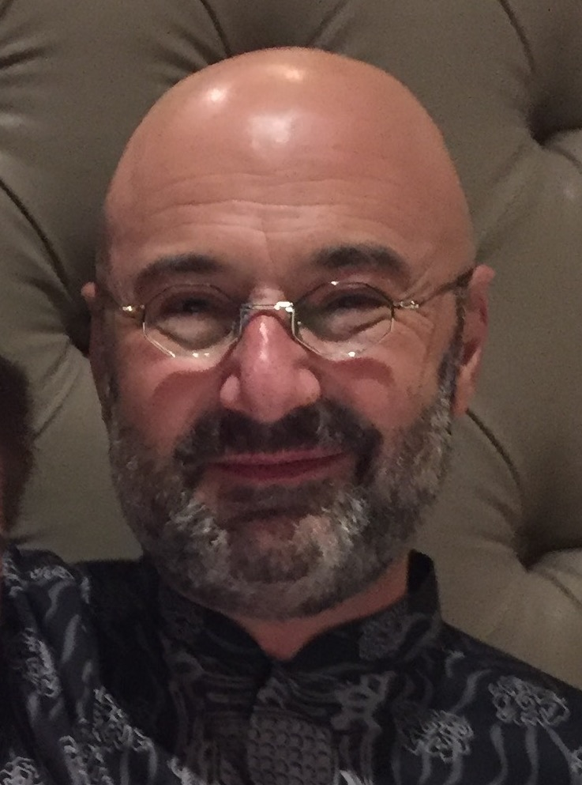
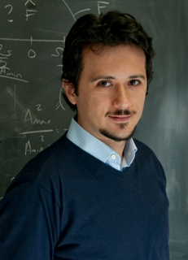

Welcome to SPCOM 2018!
TECHNICAL CO-SPONSORS
PLENARY TALKS
| SPEAKER | TITLE OF THE TALK | DAY OF THE TALK | TIME OF THE TALK | |
| Alexander Vardy | Past, present, and future of polar coding | July 17 | 11:00-12:00 | |
| Goutam Chattopadhyay | Are We Alone? NASA’s Search for Life Beyond Earth | July 18 | 10:45-11:45 | |
| Volkan Cevher | Trade-offs in resource constrained machine learning systems | July 19 | 10:20-11:20 |
Are We
Alone? NASA’s Search for Life Beyond
Earth
Speaker: Goutam Chattopadhyay
Senior Research Scientist, Jet Propulsion Laboratory, California Institute of Technology, USA, and
Visiting Associate at the Division of Physics, Mathematics, and Astronomy, California Institute of Technology, USA.Bio: Goutam Chattopadhyay is a Senior Research Scientist at the NASA’s Jet Propulsion Laboratory, California Institute of Technology, and a Visiting Associate at the Division of Physics, Mathematics, and Astronomy at the California Institute of Technology, Pasadena, USA. He is also a BEL Distinguished Chair Professor at the Indian Institute of Science, Bangalore, a Visiting Erudite Professor at the Cochin University of Science and Technology, Cochin, and an Adjunct Professor at the Indian Institute of Technology, Kharagpur. He received the Ph.D. degree in electrical engineering from the California Institute of Technology (Caltech), Pasadena, in 2000. He is a Fellow of IEEE (USA) and IETE (India) and an IEEE Distinguished Lecturer.
His research interests include microwave, millimeter-wave, and terahertz receiver systems and radars, and applications of nanotechnology at terahertz frequencies.
He has more than 300 publications in international journals and conferences and holds more than fifteen patents. He also received more than 35 NASA technical achievement and new technology invention awards. He received the Distinguished Alumni Award from the Indian Institute of Engineering Science and Technology (IIEST), India in 2017. He was the recipient of the best journal paper award in 2013 by IEEE Transactions on Terahertz Science and Technology, best paper award for antenna design and applications at the European Antennas and Propagation conference (EuCAP) in 2017, and IETE Prof. S. N. Mitra Memorial Award in 2014.
Abstract: Scientists around the world are actively looking for the existence of life beyond planet Earth. NASA’s search for Exoplanets helping us getting close to answering those questions.
Thousands of Exoplanets have been discovered over the last several years. NASA’s Kepler telescope has been in the forefront of making such discoveries. However, majority of the planets discovered outside our solar system are not in the so called “habitable” zone. Habitable zones are referred to those planets whose distance from its parent star and its temperature is such that water can be found in liquid form on the planet’s surface. Several of such planets have already been discovered.
In this presentation, we will describe the techniques that are used to detect such planets, design of the instruments and the discoveries that are being made with them for our search for life beyond Earth. The challenges of the future generation instruments and detectors for these measurements in addressing the needs for critical scientific applications will also be discussed.
The research described herein was carried out at the Jet Propulsion Laboratory, California Institute of Technology, Pasadena, California, USA, under contract with National Aeronautics and Space Administration.
© 2018 California Institute of Technology. Govt. sponsorship acknowledged.

Title:
Past, present, and future of polar
coding
Speaker: Alexander Vardy
Jack K. Wolf Chair Professor
University of California San Diego.
Bio: Alexander Vardy was born in Moscow, U.S.S.R, and grew up in Israel. He graduated summa cum laude from the Technion – Israel Institute of Technology in 1985, and completed his Ph.D. in 1991 at the Tel Aviv University. He is currently the Jack Keil Wolf Endowed Chair Professor at the University of California San Diego, where he is affiliated with the Department of Electrical & Computer Engineering and the Department of Computer Science.
He received an IBM Invention Achievement Award in 1993, and NSF Research Initiation and CAREER awards in 1994 and 1995. In 1996, he was appointed Fellow in the Center for Advanced Study at the University of Illinois, and was named a Fellow of the David and Lucile Packard Foundation. He received the IEEE Information Theory Society Paper Award (jointly with Ralf Koetter) for the year 2004. In 2005, he received the Fulbright Senior Scholar Fellowship, and the Best Paper Award at the IEEE Symposium on Foundations of Computer Science (FOCS). In 2017, his work on polar codes was recognized by the the IEEE Communications & Information Theory Societies Joint Paper Award.
During 1995-1998, he was an Associate Editor for Coding Theory and during 1998-2001, he was the Editor-in-Chief of the IEEE Transactions on Information Theory. From 2003 to 2009, he was an Editor for the SIAM Journal on Discrete Mathematics. He is currently serving on the Executive Editorial Board for the IEEE Transactions on Information Theory. He has been a member of the Board of Governors of the IEEE Information Theory Society during 1998-2006, and again during 2011-2017. His research interests include error-correcting codes, algebraic and iterative decoding algorithms, lattices and sphere packings, coding for storage systems, as well as cryptography and computational complexity theory. He is a Fellow of the IEEE and the ACM.
Abstract: Polar coding, invented by Arikan ten years ago, is one of the most original and profound developments in coding theory to date. We will not attempt to summarize 10 years of polar coding in one talk. Instead, we hope this talk will provide a glimpse into several topics curated from the past, present, and future of polar codes. No prior knowledge of polar coding is assumed; we will begin with a brief tutorial on polarization theory and polar codes. We will then describe the list-decoding algorithm for polar codes, and how it is used in the 5G standard. We will also present our recent results on polar codes with large kernels. In particular, we will show that such codes not only approach capacity, but do so as fast as theoretically possible, at least on the binary erasure channel. Finally, if time permits, we will speculate on how polar codes can be used to correct synchronization errors, such as deletions and insertions.

Title:
Trade-offs in resource constrained machine learning
systems
Speaker: Volkan Cevher
Professor
Ecole Polytechnique Federale de Lausanne.
Bio: Volkan Cevher received the B.Sc. (valedictorian) in electrical engineering from Bilkent University in Ankara, Turkey, in 1999 and the Ph.D. in electrical and computer engineering from the Georgia Institute of Technology in Atlanta, GA in 2005. He was a Research Scientist with the University of Maryland, College Park from 2006-2007 and also with Rice University in Houston, TX, from 2008-2009. Currently, he is an Associate Professor at the Swiss Federal Institute of Technology Lausanne and a Faculty Fellow in the Electrical and Computer Engineering Department at Rice University. His research interests include signal processing theory, machine learning, convex optimization, and information theory. Dr. Cevher was the recipient of the IEEE Signal Processing Society Best Paper Award in 2016, a Best Paper Award at CAMSAP in 2015, a Best Paper Award at SPARS in 2009, and an ERC CG in 2016 as well as an ERC StG in 2011.
Abstract: Massive data poses a fundamental challenge to learning algorithms, which is captured by the following computational dogma: the running time of an algorithm increases with the size of its input data. The available computational power, however, is growing slowly relative to data sizes. Hence, large-scale machine learning problems of interest require increasingly more time to solve.
Our research demonstrates that this dogma is false in general, and supports an emerging perspective in computation: data should be treated as a resource that can be traded off with other resources, such as running time. For data acquisition and communications, we have also shown related sampling, energy, and circuit area trade-offs.
This talk will summarize our work confronting these challenges by building on the new mathematical foundations on how we generate data via sampling, how we set up learning objectives that govern our fundamental goals, and how we optimize these goals to obtain solutions and to make optimal decisions. We then demonstrate task-specific, end-to-end trade-offs (e.g., samples, power, computation, storage, and statistical precision) in broad domains.